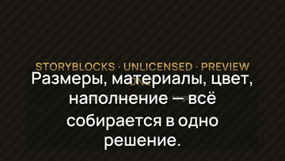
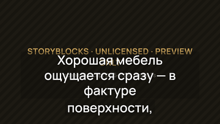
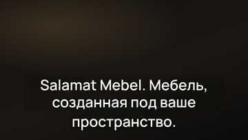

Это НЕ финальный ролик. Storyblocks остаётся BLOCKED_PROVIDER: 17 клипов не
лицензированы, поэтому весь визуальный ряд — нейтральные слейты с поисковым запросом (не сгенерированные
изображения и не видео). Голос — технический черновой: звучит только до 1:10, дальше тишина (музыкальная
подложка не лицензирована). Финальная приёмка CP-10…CP-12 не выполнялась и не заявлена.
Если плеер выше не открылся, файл лежит рядом:
promo-remotion/out/preview-salamat-mebel-v1.mp4
Кадры для проверки читаемости на телефоне (масштаб 360 px)

30,0 с · субтитры, 2 строки · в масштабе телефона

57,3 с · обязательный тактильный кадр столешницы — слейт вместо клипа

121,0 с · брендовый финальный кадр (разрешённая генеративная графика 2/2)